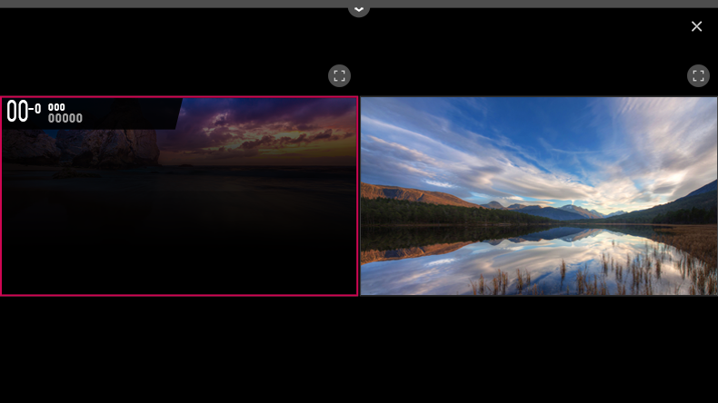

Uso de Visionado múltiple
Puede ver la Live TV y utilizar la entrada externa al mismo tiempo dividiendo la pantalla.
-
Pulse el botón
 del mando a distancia.
del mando a distancia.
- Seleccione Visionado múltiple.

En el modo Visionado múltiple, al seleccionar en cada pantalla se cambia a una vista de pantalla completa.
Seleccione la pantalla que desee mientras ve la TV para que se emita el audio de la pantalla seleccionada.
Utilice el botón del mando a distancia Mágico o los botones 
 / del mando a distancia para cambiar los canales en la pantalla seleccionada.
/ del mando a distancia para cambiar los canales en la pantalla seleccionada.
/ del mando a distancia para cambiar los canales en la pantalla seleccionada.
Es posible que Visionado múltiple no esté disponible para canales Ultra HD.
Visionado múltiple y la función de grabación (solo disponibles en algunos modelos) no se pueden usar al mismo tiempo.
Visionado múltiple y Live Playback (solo disponibles en algunos modelos) no se pueden usar al mismo tiempo.
El uso de Visionado múltiple puede estar limitado en función del dispositivo conectado o la potencia de la señal de transmisión.
Selección de entrada
- Puede seleccionar una entrada de cada pantalla haciendo clic en en la parte superior de la pantalla de la TV.
Los tipos de imagen admitidos para una pantalla pueden variar en función de los ajustes de la otra.
Los ajustes de las dos pantallas varían según el modelo.